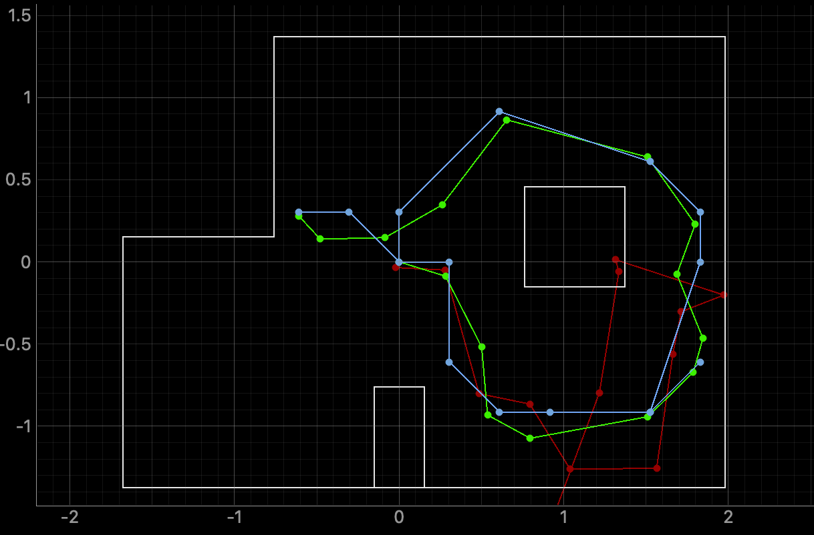

Lab 11: Localization on the Real Robot
Objective
The goal of this lab was to run the Bayes filter on the actual robot and compare localization accuracy against simulation. Because the robot's motion is too noisy to get anything useful out of a prediction step, only the update step is used: the robot spins 360° in place, takes a ToF reading every 20°, and those 18 measurements are fed into the filter starting from a uniform prior. This was tested at four marked positions in the lab space.
Simulation
First I ran lab11_sim.ipynb to confirm the Bayes filter implementation was working
before touching the real robot. The belief tracked the ground truth closely throughout the trajectory,
which matched what was seen in Lab 10.

The simulation confirmed that the provided localization code is functional, so any issues on the real robot would come down to sensor data quality rather than the filter itself.
Real Robot Implementation
To get sensor data from the real robot I implemented perform_observation_loop() in the
RealRobot class. This reuses the step-based yaw PID approach from Lab 9: a
YAW_PID_START command is sent for each 20° increment, which tells the Artemis to
rotate to that heading, hold it with PID, and log a ToF reading. After all 18 steps complete,
LAB9_SESSION_GET_DATA flushes all rows back over BLE as
L9ROW:<yaw>,<tof_mm> notifications. The code also pulls from the
provided demo notebook and localization extras, which I modified to work with my existing BLE command
structure.
def perform_observation_loop(self, rot_vel=120):
obs_count = int(self.config_params.get("observation_count", 18))
step_deg = int(round(360.0 / obs_count)) # 20 degrees
kp, ki, kd = 0.1, 0.2, 0.01
duration_ms = 1500
min_pwm, max_pwm = 120, 255
loop_period_ms = 10
rows = []
def _notif_handler(_uuid, byte_array):
raw = self.ble.bytearray_to_string(byte_array).strip()
if not raw.startswith("L9ROW:"):
return
parts = raw[6:].split(",")
if len(parts) == 2:
try:
rows.append((float(parts[0]), int(parts[1])))
except ValueError:
pass
self.ble.start_notify(self.ble.uuid["RX_STRING"], _notif_handler)
try:
self.ble.send_command(CMD.LAB9_TOF_CLEAR, "")
time.sleep(0.05)
for _ in range(obs_count):
payload = (f"{step_deg}|{kp}|{ki}|{kd}|"
f"{duration_ms}|{min_pwm}|{max_pwm}|{loop_period_ms}")
self.ble.send_command(CMD.YAW_PID_START, payload)
rows.clear()
self.ble.send_command(CMD.LAB9_SESSION_GET_DATA, "")
time.sleep(7.0)
finally:
self.ble.stop_notify(self.ble.uuid["RX_STRING"])
ranges_m, bearings_deg = [], []
for i, (_yaw, tof_mm) in enumerate(rows[:obs_count]):
ranges_m.append(tof_mm / 1000.0 if tof_mm >= 0 else np.nan)
bearings_deg.append(float(i * step_deg))
while len(ranges_m) < obs_count:
ranges_m.append(np.nan)
bearings_deg.append(float(len(bearings_deg) * step_deg))
sensor_ranges = np.array(ranges_m, dtype=float)[np.newaxis].T
sensor_bearings = np.array(bearings_deg, dtype=float)[np.newaxis].T
return sensor_ranges, sensor_bearings
The 18 YAW_PID_START commands are sent back-to-back and the Artemis queues them,
running each step after the previous one finishes. Because each command carries the same PID gains,
clamp limits, and hold duration, every angular sample is taken under consistent controller settings,
which keeps the scan more repeatable from run to run.
After the command queue drains, the host requests all logged rows in one transfer and keeps
notifications open long enough for the full packet stream to arrive. The parser only accepts
L9ROW: frames and ignores anything malformed, so bad BLE text does not poison the
observation array. Finally, ToF values are converted from mm to meters, missing entries are padded
with NaN, and both ranges and bearings are returned as column vectors matching the
localization module interface.
Localization Results
The robot was placed at each of the four marked poses and the update step was run from a uniform prior. Green marker = ground truth, blue marker = filter belief.


Discussion
All four poses localized reasonably well. The step-based rotation was a big part of why: stopping at each 20° increment with the yaw PID means the ToF reading is taken while the robot is stationary, so each sample is cleanly tied to its nominal angle. Continuous spinning would introduce a timing mismatch that corrupts the angular assignment.
Relative to ground truth, each estimate landed in the correct region with a modest but noticeable margin of error, which is expected from ToF noise, heading quantization at 20° steps, and small repeatability limits in real robot motion.
The 18-angle sweep gives the filter enough angular coverage that even poses without a wall directly nearby still produce a distinctive enough signature to constrain the belief. Starting from a uniform prior and skipping the prediction step entirely also helped. On a real robot, wheel slip and motor imbalance would just smear the belief if a motion model were involved, so letting the sensor data do all the work each spin was the right call.